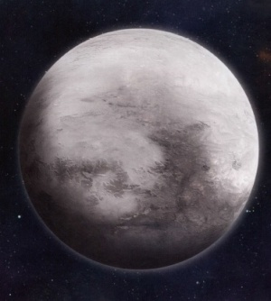

Rogal Dorn,Le Prétorien De Terra

Les Primarques sont des êtres transcendants, détenant une partie du sublime et de l’inconnaissable dans leur nature. Toutes les qualités qui semblent fortes chez un guerrier d’une Légion de Space Marines existent plus fortement, plus profondément et avec plus de subtilité chez un primarque. Bien qu’ils soient issus de la graine de l’humanité, les primarques ne sont pas vraiment humains, car une partie de leur nature est née du pouvoir du Warp. Cette nature semble souvent améliorer et concentrer les qualités offertes à une Légion par leur graine génétique.
C’est ainsi qu’au moment où le primarque et la Légion s’unissent, il y a souvent un moment où le caractère d’une Légion peut sembler changer. Dans le cas des Imperial Fists, la découverte de leur primarque et de la planète qui l’avait élevé n’a fait que renforcer le caractère dont les Impérial Fists avaient fait preuve depuis leur création.
Lorsque les 20 primarques naissants génétiquement modifiés ont été volés dans les laboratoires de l’Empereur sur Terra par les Puissances de la Ruine et jetés dans l’Immaterium, ils ont été dispersés dans toute la galaxie sur différents mondes, ce qui a façonné la nature et la personnalité de chaque primarque et plus tard des Légions Astartes individuelles créées à partir de leur génome. Lorsque le primarque Rogal Dorn a été restauré dans l’Imperium, il devait se trouver sur le Monde de Glace d’Inwit situé dans le Groupe Inwit.

Inwit était, et est, un monde de mort et de froid. Son étoile est vieille et fanée, saignant les derniers de sa chaleur sous forme de lumière rouge et froide. Bloquée par la marée contre son étoile mourante, l’obscurité perpétuelle imprègne un côté de la planète, la lumière du soleil fanée de l’autre. Des labyrinthes de crevasses, des chaînes de montagnes gelées et des plaines de dunes de givre recouvrent le côté sombre de la planète - c’est la « Terre éclatée », la nature sauvage traquée par les bêtes qui façonne les corps et les croyances de la population de la colonie humaine qui s’accroche à la vie ici.
Sous la croûte de glace, des mers épaisses coulent en marées lentes et des créatures pâles et aveugles nagent dans les eaux, chassant par vibration et un goût surnaturel pour le sang. Bien au-dessus de cette désolation, de grandes et anciennes stations du Vide et des chantiers navals orbitaux regardent le monde enveloppé de froid à travers des aurores perpétuelles - créées dans un passé perdu, ces citadelles du Vide ont regardé Inwit depuis bien avant que les archives ou les contes actuels ne puissent s’en souvenir. Tandis que sur la planète, le côté lumineux d’Inwit n’offre guère plus de confort que les sombres Terres Éclatées, une terre de mers salines à croûte dérivante et de roches nues clairsemées sous le regard impassible du soleil rouge.
Il y a peu de valeur sur Inwit ; Ses mers sont ensevelies ou sans vie, Ses montagnes dépourvues de richesses et ses espèces indigènes vicieuses. Il y a cependant une chose que ce monde hostile produit qui l’a conduit à conquérir un amas d’étoiles et à perdurer en tant qu’empire insulaire de l’ordre à l’ère des conflits : son peuple. Bien qu’ils soient barbares, ils sont loin d’être sophistiqués.
Les guerriers d’Inwit sont élevés pour endurer et survivre. Le monde qui les porte leur enseigne à ne jamais se relâcher et que le prix de la faiblesse est la mort, pour eux et le reste de leur famille. La mort se présente sous de nombreuses formes sur Inwit ; dans les tempêtes de verglas qui peuvent geler et couvrir un homme en quelques secondes, aux griffes des prédateurs qui errent dans les Terres Éclatées, et dans le manque de concentration qui permet au froid de pénétrer les sceaux de chaleur d’une cale.
Ces facteurs font un certain type de personnes : fortes, sombres et dévouées à la survie de l’ensemble plutôt que de l’individu. Une grande partie de la population mondiale est nomade, se déplaçant entre les ruches de glace souterraines pour échanger des armes, du carburant et de la technologie. Les conflits entre les clans itinérants sont fréquents et les jeunes guerriers apprennent à se défendre contre les ennemis de leur clan dès qu’ils apprennent à supporter le contact mortel du froid impitoyable d’Inwit. Ils apprennent incroyablement vite et ont un sens inné de la valeur fonctionnelle d’un objet et, surtout, ils ont la force et l’intelligence de conquérir ceux qui possèdent des connaissances qu’ils n’ont pas.
Il y a bien longtemps, avant même que la venue de l’Empereur ne soit un rêve sur Terra enveloppée de nuit, le peuple d’Inwit a commencé à créer son propre royaume dans les étoiles. Sur chaque monde qu’ils ont pris, ils ont assimilé, réaligné et renforcé. À chaque conquête, leur culture et leur savoir grandissaient, mais Inwit lui-même restait inchangé, même s’il devenait le centre d’un empire stellaire.
Les ruches de glace et les querelles de clans sont restées et tandis que leur monde a donné naissance à des vaisseaux spatiaux et a entouré ses orbites de stations d’armes, ses dirigeants sont restés fidèles aux anciennes méthodes, les voies qui avaient créé leur force, les seigneurs de guerre et les matriarches qui commandaient des armées parmi les étoiles vivant toujours une vie à peine plus facile que leurs vassaux. C’était ainsi, et c’est ainsi maintenant.
C’est dans le cadre de cet empire en plein essor que Rogal Dorn a atteint l’âge d’homme, puis de régner sur ses domaines interstellaires en tant qu’empereur. Une grande partie de ses premières années reste inconnue, ou du moins on en parle peu. Il est cependant certain que dans le froid et l’obscurité d’Inwit, un garçon nommé Rogal, par sa famille adoptive, s’est levé pour mener la Maison de Dorn - également connue sous le nom de Caste de Glace - puis à la tête de l’Inwit Cluster.
Le patriarche du clan qui a élevé Dorn est devenu un grand-père adoptif pour lui et lui a enseigné beaucoup de tactique, de stratégie et de diplomatie. Même après avoir découvert qu’il n’était pas lié par le sang à son « grand-père », Dorn a tenu sa mémoire en grande valeur ; Il gardait une robe bordée de fourrure qui avait appartenu à l’homme et dormait avec elle sur son lit chaque nuit.
Les qualités innées de Dorn se mariaient parfaitement avec celles d’Inwit, et il poussa leur empire plus loin que tout autre. Dorn dirigeait et entraînait ses armées, et façonnait des vaisseaux du Néant comme on n’en avait jamais vu auparavant.
Si vous souhaitez revenir au hub de sélection afin de lire une autre histoire cliquez ici.